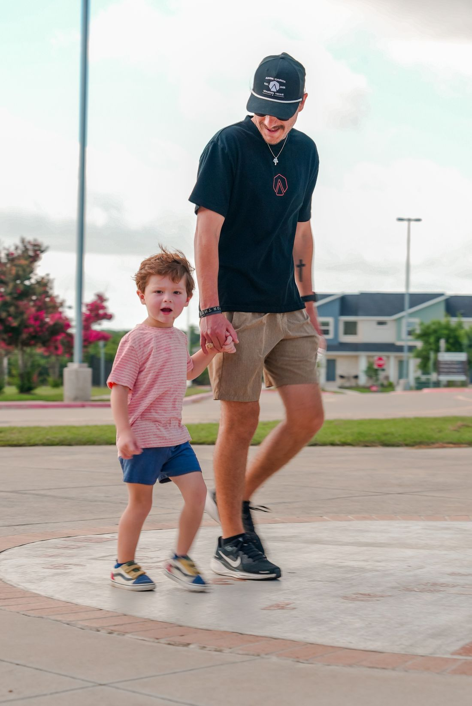
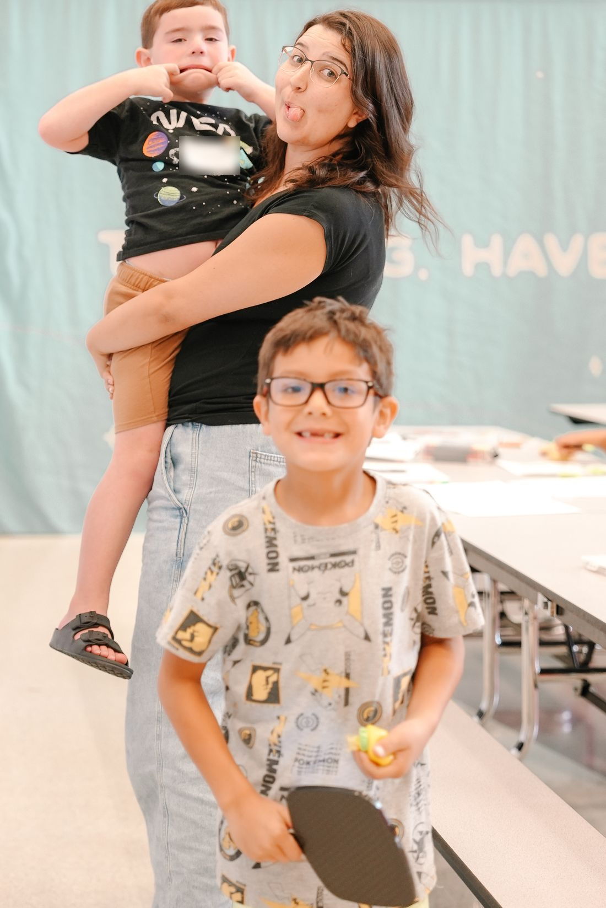
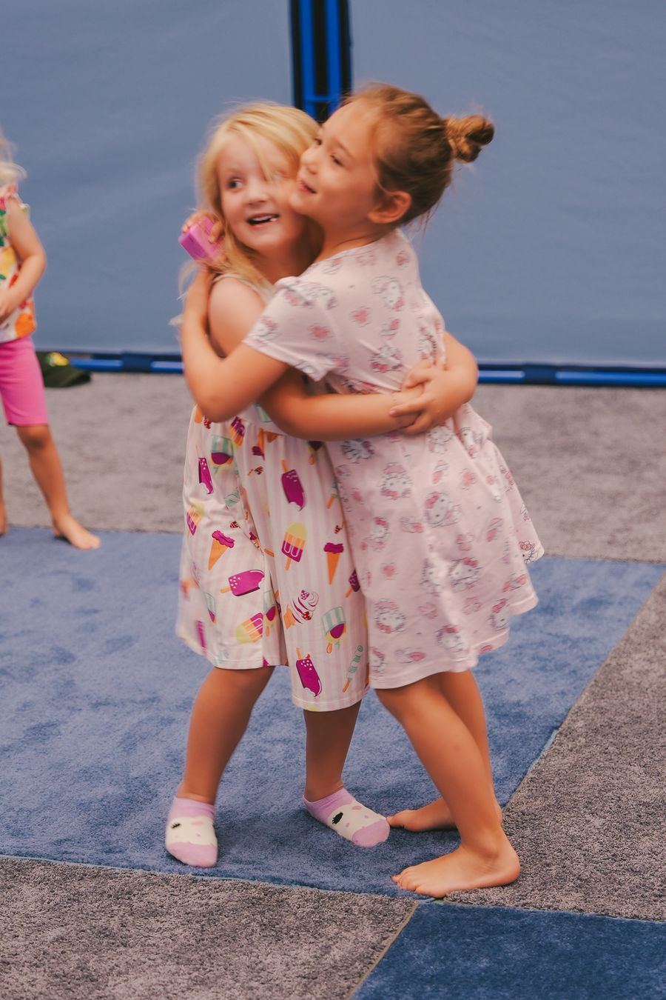
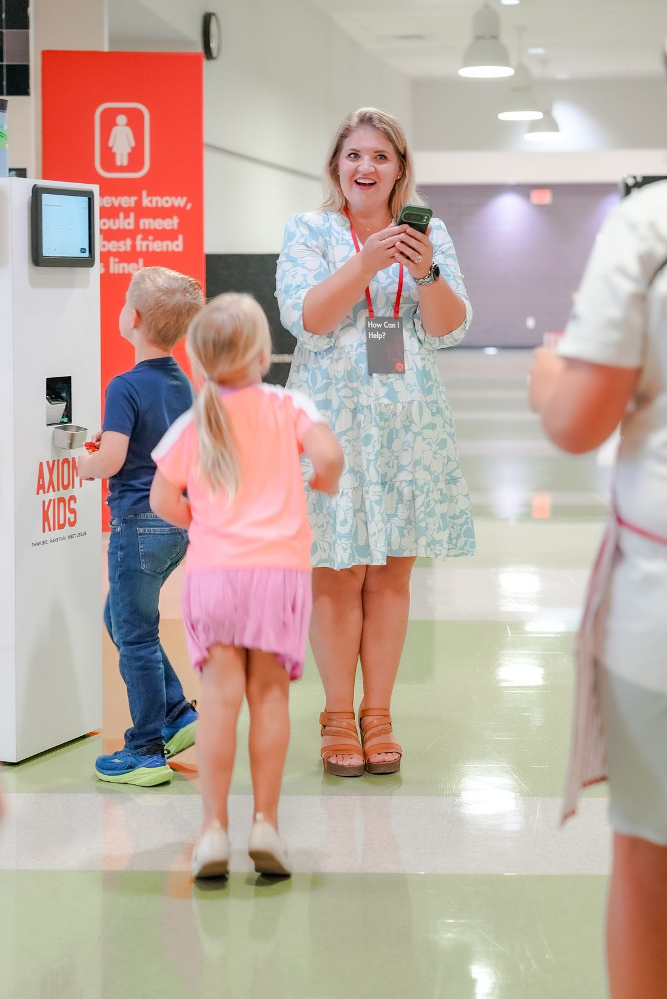
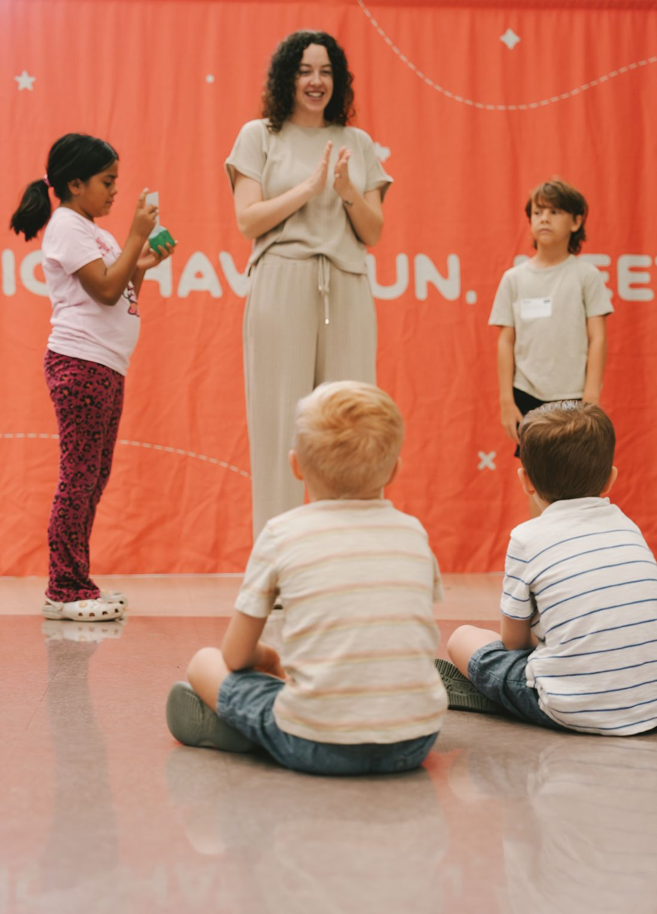
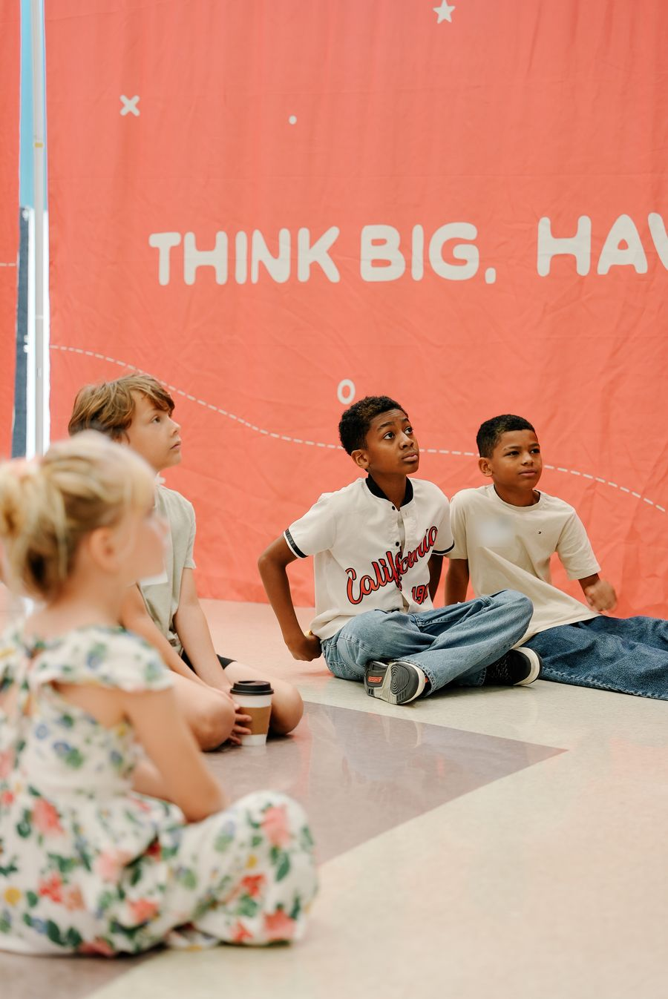
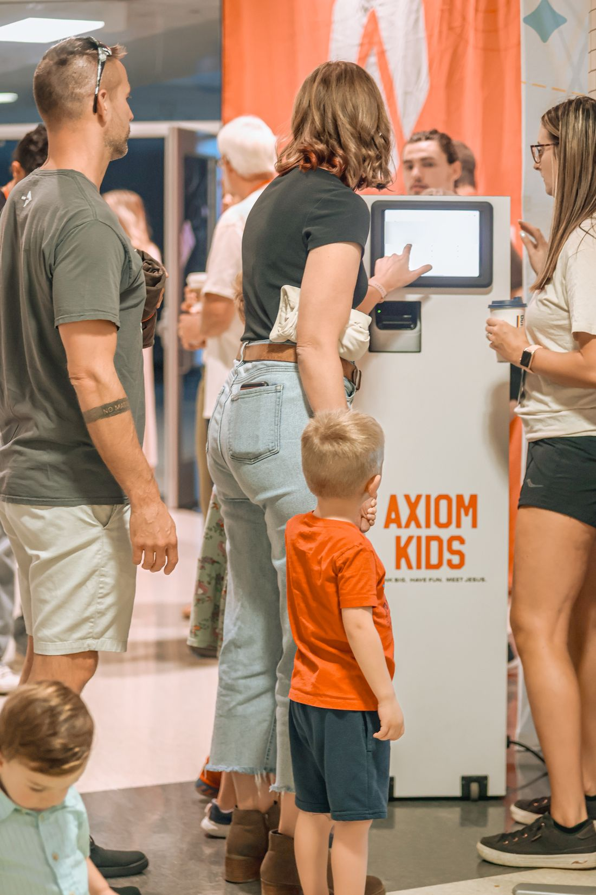
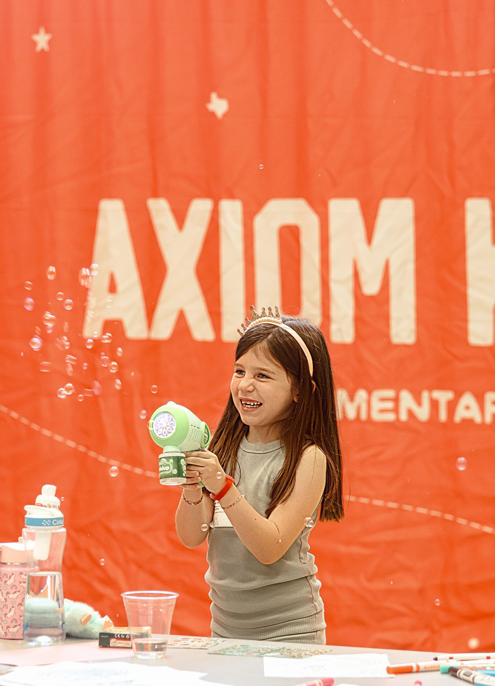

Axiom Kids
Your kids will beg to come back.
Birth through 5th grade. Sundays at 10am, while you're in the service.



Have fun.
Games, friends their own age, and an environment built for them.

Stay safe.
Every volunteer is background checked. You get a tag, your kid gets the same tag, and nobody else can pick them up.


Meet Jesus.
Worship with other kids their age and a Bible teaching that actually makes sense to them.
Things we've heard in Axiom Kids.
- KIDHeard at Axiom Kids
“Is today Sunday? I want to see my friends at church.”
A five-year-old - MOMHeard at Axiom Kids
“It's the first kid-free hour I've had all week.”
Mom of three - DADHeard at Axiom Kids
“I was late, and they were still ready for me.”
Single dad - PARENTHeard at Axiom Kids
“She cried at drop-off. Then she cried at pick-up. Make up your mind.”
A parent - PARENTHeard at Axiom Kids
“My kid prayed for the first time. Did you teach them that?”
A parent - DADHeard at Axiom Kids
“He asked if we could come back next week. I was kind of hoping he'd hate it.”
A dad who got talked into coming - PARENTHeard at Axiom Kids
“I lost my tag.”
Tired parent - KIDHeard at Axiom Kids
“When can we go back?”
Every kid who leaves

Drop-off, start to finish.
- 1Find New Here.There's one out front or in the lobby. Someone will guide you from there.
- 2Register your family.Fill out a short form so we know who you are. Or pre-register and skip this step.
- 3Type in your phone number.Two matching tags print. One for you, one for your kid. Don't lose yours!
- 4Walk them to their room.We'll show you where. Then go get coffee!
- 5Pick them up.Show your tag after the service. No one else can pick them up.
What ages do you take?
Who's in the room with my kid?
Who can pick my kid up?
How are the ages split up?
What do they actually do in there?
What if my kid needs me during the service?
Can my kid stay with me?
What about allergies and snacks?
My kid has special needs. What should I know?

Let us know who's coming.
Your name, their names and ages, which Sunday. Thirty seconds.
Let us know you're comingOr just show up. That works too.